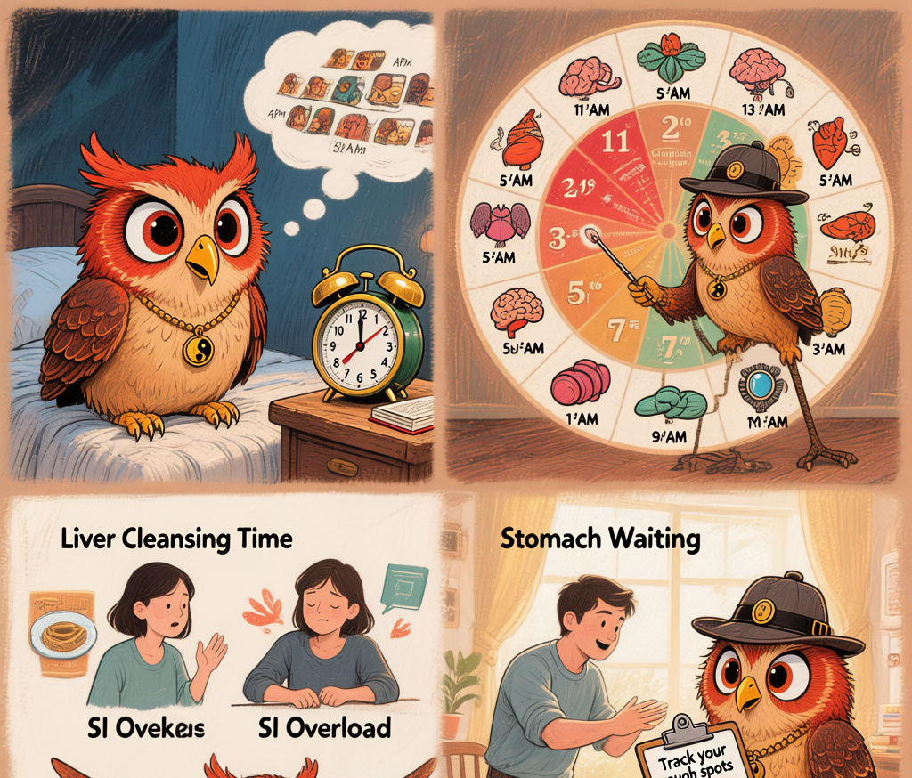

Your Body Runs on a Clock You Didn't Set — And 3 AM Is Never Random
126| 127| 128|Let me guess something about you.
129| 130|There's a time of day when you always feel off. Maybe you wake up at 3 AM like clockwork, staring at the ceiling for no reason. Maybe your brain turns to mush around 2 PM regardless of how much sleep you got. Maybe your appetite vanishes every morning at 11, or you get inexplicably irritable every evening around 7.
131| 132|You probably think these are random. Quirks. Just how your body works.
133| 134|I have good news and weird news. The good news: it's not random. The weird news: according to a system developed in China roughly before the invention of the mechanical clock, your organs report for work on a fixed schedule — and they've been following that schedule inside you for your entire life without once asking your permission.
135| 136|Welcome to the TCM body clock.
137| 138|A Factory That Runs Itself
139| 140|Imagine a factory with twelve departments. Each department operates at full capacity for exactly two hours per day. During those two hours, that department is handling its heaviest workload — processing materials, clearing backlogs, doing maintenance, shipping finished products.
141| 142|The rest of the time? It's on standby. Not closed — just not at peak output.
143| 144|This factory doesn't have a manager telling people what to do. The schedule is built into the machinery. Department A knows when it's their turn. Department B knows when to step back. Everything runs automatically, and it's been running this way for thousands of years.
145| 146|In TCM, your body is this factory. And the twelve departments are your organ systems — though it's important to understand that "organ" in Chinese medicine means something closer to "functional system" than the anatomical organ you'd find in a dissection lab.
147| 148|This concept has a name: Ziwu Liuzhu (子午流注), often translated as "midnight-noon flow." It describes a 24-hour cycle divided into twelve two-hour segments, each associated with a specific organ system operating at its peak.
149| 150|If your car's check engine light came on at the same time every day, you wouldn't call it a coincidence. You'd look at the engine log. This is the engine log your body came with.151| 152|
The Full Schedule (With Notes from Ollie)
153| 154|Here's the complete clock, translated into plain English. I've added notes about what you might notice if a given system is having trouble — because the most useful thing about this framework isn't memorizing the times. It's recognizing patterns in your own life.
155| 156|| Time | 160|Organ System | 161|Peak Function & What to Watch For | 162|
|---|---|---|
| 11 PM – 1 AM | 167|Gallbladder | 168|Deep repair mode. This is when your body does its deepest restoration work. Trouble falling asleep in this window? Could be Gallbladder-related tension or decision fatigue catching up. | 169|
| 1 – 3 AM | 172|Liver | 173|Cleansing and detoxification peak. Waking between 1–3 AM is one of the most commonly reported patterns. In TCM theory, this suggests the Liver is struggling — often linked to unresolved frustration, anger, or processed emotions stored during the day. | 174|
| 3 – 5 AM | 177|Lung | 178|Breath and immune reset. Waking here? Often linked to grief, sadness, or respiratory vulnerability. Also the coldest part of the night in terms of Yang energy — which is why early-morning asthma attacks are a real, documented phenomenon across medical traditions. | 179|
| 5 – 7 AM | 182|Large Intestine | 183|Elimination time. Your body wants to clear waste now. This is why healthy bowel movements tend to happen in the morning. Struggling here? Consider hydration the night before and whether your diet is providing enough bulk. | 184|
| 7 – 9 AM | 187|Stomach | 188|Digestive fire peaks. Your Stomach is ready to work. This is the best time to eat a substantial breakfast — your body can actually use the nutrients. No appetite in the morning? That's a signal worth paying attention to. | 189|
| 9 – 11 AM | 192|Spleen | 193|Nutrient absorption and transformation. The Spleen (in TCM, a digestion-and-energy-production system) takes what the Stomach broke down and turns it into usable energy and blood. Brain fog around 10–11 AM? Your Spleen might be asking for better fuel. | 194|
| 11 AM – 1 PM | 197|Heart | 198|Heart energy at maximum. Mental clarity, speech, and cognitive function peak. This is traditionally considered the best time for focused work, important conversations, and decisions that require sharp thinking. | 199|
| 1 – 3 PM | 202|Small Intestine | 203|Separation and sorting. The Small Intestine separates the useful from the useless — both physically (nutrients vs. waste) and metaphorically (what matters vs. what doesn't). The post-lunch slump? Might be your SI sorting through lunch while your brain waits for resources. | 204|
| 3 – 5 PM | 207|Bladder | 208|Storage and elimination. The Bladder (which in TCM includes more than the urinary bladder — it's part of the water metabolism and fluid regulation system) does its organized clearing. Low energy here? Could be dehydration catching up or simply the natural afternoon dip. | 209|
| 5 – 7 PM | 212|Kidney | 213|Essence storage and root vitality. The Kidney system in TCM is foundational — it stores your constitutional essence (Jing), governs reproduction and aging, and roots your overall energy. Feeling wiped out right after work? Your Kidney reserves might need tending. | 214|
| 7 – 9 PM | 217|Pericardium | 218|Protection and winding down. The Pericardium (often called the "Heart protector") creates space around the Heart so it can rest. This is ideal time for relaxation, intimacy, gentle activity. Irritability in the evening? Something might be intruding on the Heart's protected downtime. | 219|
| 9 – 11 PM | 222|Triple Burner (San Jiao) | 223|System-wide coordination and transition to rest. The Triple Burner (a meta-system that coordinates all three body cavities) manages the handoff from daytime activity to nighttime repair. Difficulty transitioning to sleep? This window matters more than most people realize. | 224|

230|Ollie's organs are unionized. Yours should be too.
231|The Three Patterns Everyone Recognizes
234| 235|You don't need to memorize all twelve windows. In my experience reading through the classics and observing patterns in my own life, there are three that come up again and again — because they correspond to things people actually notice:
236| 237|Pattern A: The 3 AM Wake-Up
238|Liver time (1–3 AM). This is the single most common "I can't believe other people experience this too" moment in any discussion of the body clock. People who wake consistently at this time often report:
239|-
240|
- Feeling frustrated or agitated (not sad or anxious — specifically irritated) 241|
- Racing thoughts that won't quiet down 242|
- A sensation of heat, especially in the chest or face 243|
- Difficulty falling back asleep for 1–2 hours 244|
In TCM, the Liver is responsible for the smooth flow of Qi (remember our traffic jam conversation?). At night, when the Liver is supposed to be cleansing and restoring, it can't do its job properly if the day's frustrations are still sitting there, unprocessed. The wake-up is your body's way of saying: "we still have unfinished business."
246| 247|Pattern B: The Afternoon Crash (1–3 PM)
248|Small Intestine time. You ate lunch. Your body is busy sorting nutrients. Your brain feels like someone replaced the coffee with sand. This one is so common that entire cultures built siesta traditions around it. But if your crash is severe, persistent, or happens even after a good night's sleep and a reasonable lunch, the TCM lens would ask: what is your digestive system struggling to sort?
249|Often the answer isn't "more coffee." It's: lighter lunch, less sugar, more actual nutrients that give the Small Intestine something worthwhile to work with.
250| 251|Pattern C: The Morning No-Appetite
252|Stomach time (7–9 AM). Your Stomach is showing up for work and there's nothing to process. You're either forcing yourself to eat (because "breakfast is the most important meal") or skipping entirely. Neither is great. The TCM view would be: figure out why your Stomach Qi isn't awake yet. Are you eating too late at night? Is your dinner too heavy? Are you going to bed stressed?
253| 254|How to Work With Your Clock (Not Against It)
255| 256|Here's the practical stuff. Again — not medical advice, just a framework for paying attention differently.
257| 258|-
259|
- Track your patterns for one week. Note the times when you feel distinctly off — tired, foggy, irritable, hungry, nauseous. Don't interpret yet. Just collect data. 260|
- Compare against the clock above. Do your rough spots line up with specific windows? If you consistently feel terrible at the same time every day, that's information. 261|
- Make one adjustment tied to that window. Waking at 3 AM (Liver)? Try processing the day's frustrations before bed — journaling, a walk, a conversation. Crashing at 2 PM (Small Intestine)? Try a lighter, protein-rich lunch instead of carbs. No appetite at 8 AM (Stomach)? Try eating dinner earlier. 262|
- Give it two weeks. Bodies are slow to respond. One good night's sleep doesn't fix years of pattern disruption. 263|
- If nothing changes, that's also information. It means the cause might not be rhythm-related, or the pattern is more deeply entrenched than lifestyle tweaks can address. Time to consider professional help — TCM practitioner, doctor, or both. 264|
What Modern Science Says (Briefly)
267| 268|I want to be honest about what we know and don't know. The TCM body clock was developed through centuries of clinical observation, not controlled trials. But modern chronobiology has confirmed that human bodies do run on internal timekeepers — circadian rhythms regulated by the suprachiasmatic nucleus in your brain. Hormone levels, body temperature, cognitive performance, digestive enzyme activity — they all fluctuate predictably over 24 hours.
269| 270|The Nobel Prize in Physiology or Medicine 2017 was awarded for discoveries of molecular mechanisms controlling circadian rhythms. We know these rhythms exist. We know disrupting them (shift work, jet lag, blue light at night) causes real health problems. What we're still learning is whether the TCM organ-specific mapping corresponds to measurable physiological processes in the way classical texts suggest.
271| 272|My personal take: the fact that a pre-clock civilization identified these patterns at all is remarkable. Whether every detail maps perfectly onto modern physiology matters less than whether the framework helps you pay attention to your body in ways you hadn't before. And for many people, it does exactly that.
273| 274| — Ollie, whose Liver once filed a noise complaint at 2:47 AM and finally got the message. 275| 276|Sources & Further Reading
278|-
279|
- 280| Huangdi Neijing (《黄帝内经》, Su Wen chapter 8: "The Spiritual Seal"). Contains the foundational description of the correspondence between organ systems and time periods, establishing the theoretical basis for the body clock. 281| 282|
- 283| Hall, Rosalind et al. "Circadian Rhythms and Health: From Mechanisms to Therapeutic Opportunities." Nature Reviews Molecular Cell Biology, 2022. An accessible review of modern circadian science for readers interested in how contemporary research intersects with traditional time-based medicine. 284| 285|
- 286| Wiseman, Richard. "BodyClock: Discover Your Natural Rhythms for Maximum Performance." A practical, evidence-based guide to working with your circadian rhythms, written for general audiences. Good companion reading for the TCM perspective. 287| 288|
- 289| Lo, Vivienne. TCM Organ Clock: A Practical Guide. Singing Dragon, 2021. Applies the Ziwu Liuzhu system to everyday self-care, with case studies and simple adjustments readers can try at home. 290| 291|